Human Resources Information System
A concept HRIS app that gives employees everything work-related in one place — clocking in and out, leave, payslips, and their day at a glance. Inspired by how tools like Mekari Talenta work, but designed differently through my own research and experience using HRIS apps.
The Problem.
In the HRIS apps I've used at work, the daily essentials create small but constant friction: clocking in and out uses two separate buttons that are easy to press wrong — one misclick at the start of the day records you as clocking out. An attendance carries no context — no location, weather, or date at a glance — and there is no clear picture of the workday itself: time remaining, on-time days, delays, or permits.
Each of these frictions became a design opportunity.
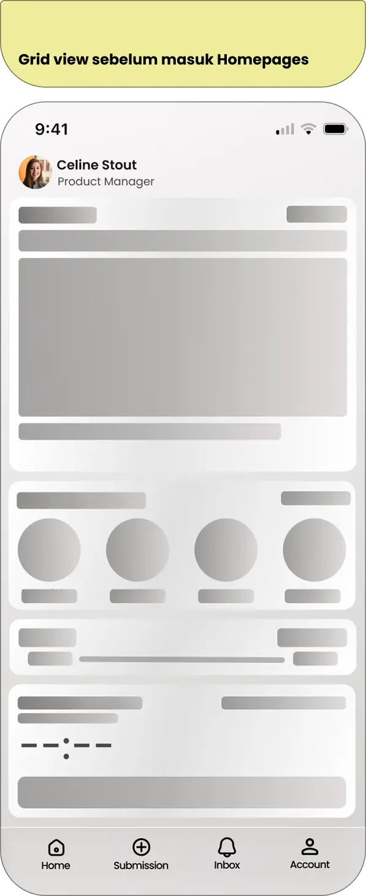
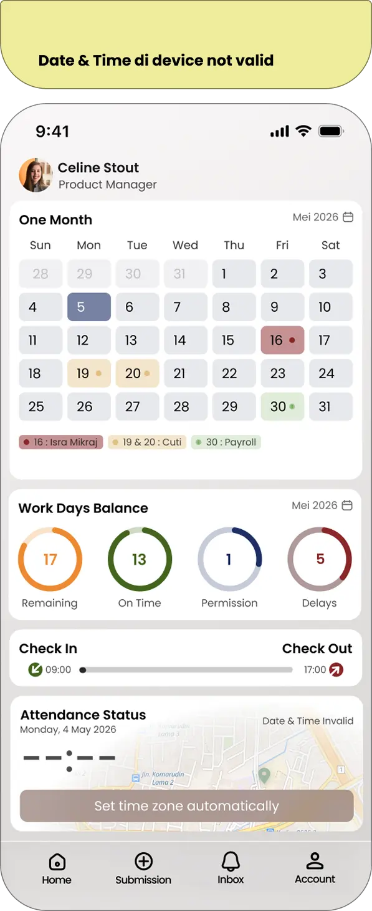
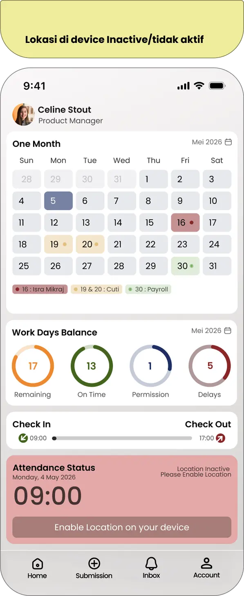
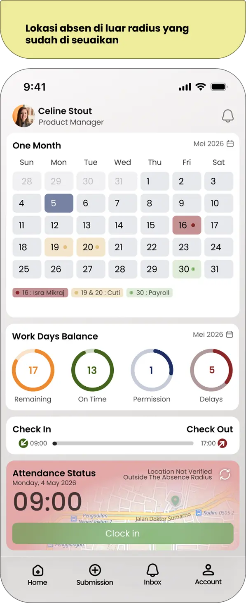
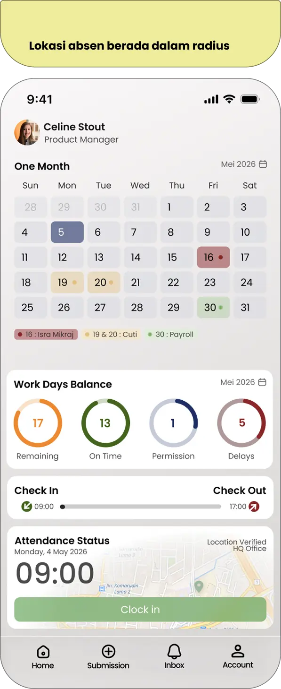
Research: starting from daily experience.
As a self-initiated concept, the project started from my own experience using an HRIS app at work. I mapped where my daily flow felt slow or confusing, then studied how established tools like Mekari Talenta solve the same problems — not to copy them, but to understand the patterns behind them.
From there, I shaped a different approach: instead of spreading features across menus, Optimas brings the essentials — attendance, schedule, and day balance — into one glanceable view. The decisions below are the direct result of that research.
Creating consistency in the HRIS experience
A design system is used to maintain consistency in visuals and interaction patterns across the HRIS interface. Typography, color, spacing, and reusable components are organized to create a structured and user-friendly experience.
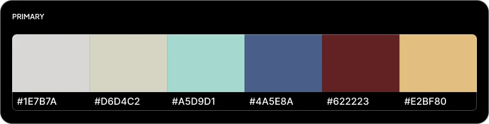
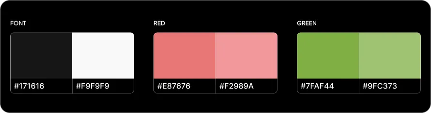
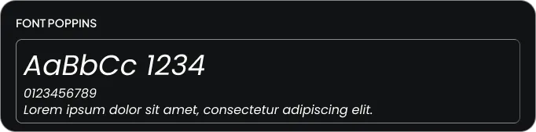
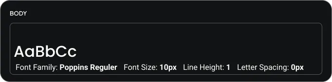
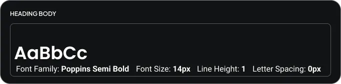
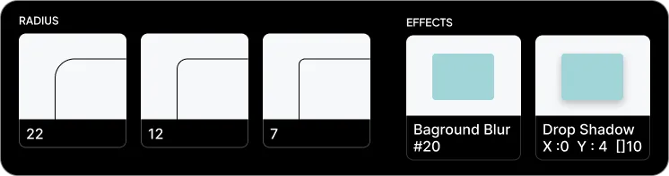
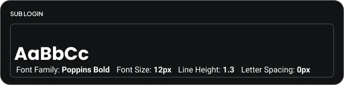
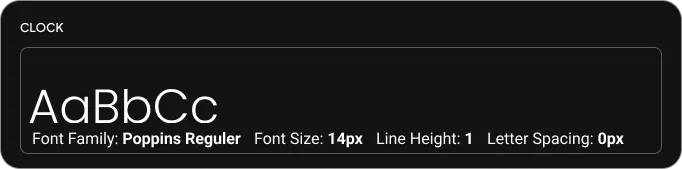
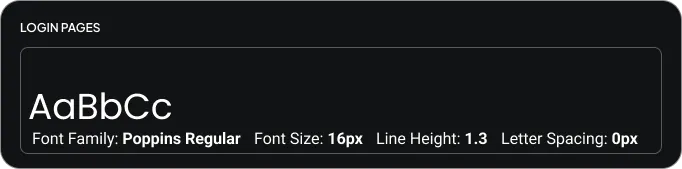
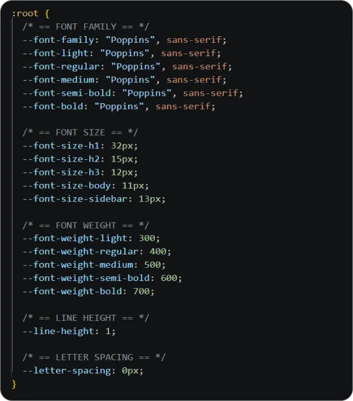
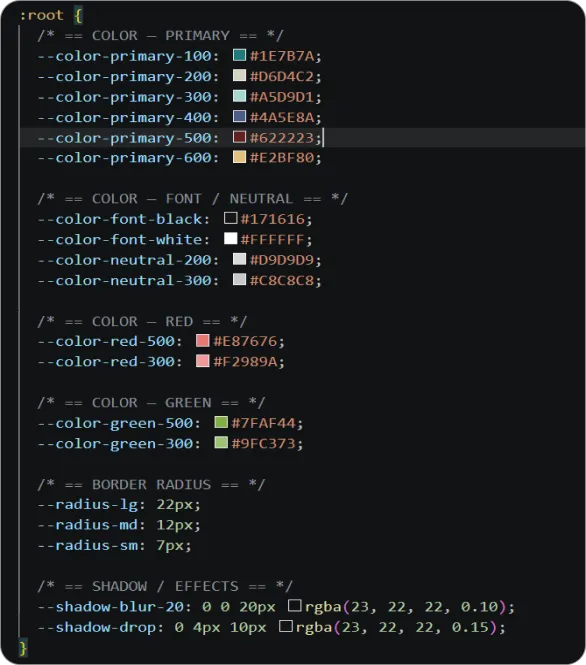
Design system - colors, typography, spacing and visual elements.
Building a scalable interface
Interface components are designed to be reusable across different parts of the system. This approach helps maintain consistency while making the interface easier to develop and maintain.

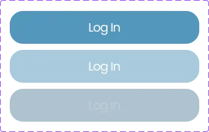


Component library - reusable UI elements for the EMR interface.
Key design decisions.
One button, no wrong click. Clock In and Clock Out share a single button that changes with your state — before clocking in you only see Clock In, after that only Clock Out. The misclick that records you as "clocked out" at the start of the day is now impossible.
A workday you can read at a glance. A progress bar follows the day from clock in to clock out, and a Work Day Balance card shows time remaining, on-time days, delays, and permits in one place. Every attendance comes with its context: the location map, the weather, the date, and the time.
A calendar that warns before it matters. The work calendar gathers leave, holidays, and upcoming agenda in one view — with notifications, so nothing takes you by surprise.


The Outcome.
I shared the prototype with colleagues who use HRIS apps in their daily work. The response confirmed the direction: the single clock in/out button was the standout — everyone immediately understood the problem it solves — and the day balance view made workday information feel effortless to read.
As a first version, the biggest win was clarity of direction: I know exactly which features deserve the next iteration. Given more time, I would test the attendance flow with more users in real conditions — outdoors, on different devices — and see how the one-button design holds up.
Explore the final experience.
Explore the interactive prototype and try the Optimas app yourself.
This is the first version of Optimas. I'm still building on it — refining the design, improving performance, and adding features.